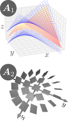

15.可積分条件
偏微分の可換性と可積分条件
この章では、これまで証明を保留していた以下の3つの定理を示す：
偏 微 分 は 可 換 で あ る ベ ク ト ル 場 の 可 積 分 条 件 拘 束 条 件 の 可 積 分 条 件
15.1偏微分は可換である
第6章の【6.3-注2】で、偏微分が可換だと述べたが、証明していなかった。この節でその証明を行う。
定理：偏微分は可換である
多変数関数
証明
まず、
さらに、
ここで、ヘッセ行列は
さて、定理を背理法で示す。もし、式(
【15.1-注1】1次ベクトル場の分解
3次の正方行列の基底

これらが作る1次ベクトル場
補足
[1]これらが基底になっていること、即ち、任意の行列がこれらの線形結合
上図から連想されるように、
これらは、1次ベクトル場に限らず、任意の全微分可能なベクトル場の場合にも拡張できる。即ち、ベクトル場
【15.1-注2】行列の分解
任意の正方行列
証明の概略
15.2ベクトル場の可積分条件
ベクトル場
定理：ポアンカレの補題（の特別な場合）
全微分可能な（＝1次近似可能な）ベクトル場
この式(
証明
まず、「ポテンシャル
後は、その逆「可積分条件が成立⇒ポテンシャル
よって示すべきは、可積分条件(次 近 似 を 代 入 し た 後 、 次 と 次 の 項 の み 残 す 。 次 次 を 代 入 （ 部 分 積 分 ） し て を 括 り だ す 。 青 字 部 分 は 積 分 す る と 消 え る 。
【15.2-注2】ベクトル場の積分
1次近似可能な関数
この積分は、ベクトル場
これを実際に計算するには、前章と同様に、数直線上の積分へ引き戻してやればよい。経路上の点を、パラメータ
補足
参考：穴がある場合、
上記の証明では、2つの積分経路が連続的に移り変われることが重要であった。これが成り立たない場合には、ポテンシャルが一意的に決まらないことがある。例えば、2次元平面において、可積分条件を満たさない領域、あるいは、ベクトル場がそもそも定義されていない領域があった場合、その領域を右回りに通る経路と、左回りに通る経路は、連続的に移り変わることはできない。この場合、たとえ積分経路上で可積分条件を満たしていても、積分が一致するとは限らない。
その典型例が、極座標
このように、可積分条件を満たさない領域があったり、空間に穴があったりする場合、多価関数（複数の値をとる関数）になることがあるわけである。
【15.2-注2】角度の微分
導出
また、原点以外で可積分条件を満たすこと、即ち
対 称 行 列
15.3拘束条件の可積分条件
座標
可積分・非可積分の例

可積分および非可積分な拘束の例を挙げておこう：（可積分条件(
非可積分な拘束の身近な例は、自動車である。実際、自動車には真横への平行移動が（直接は）できないという拘束がかかっているにもかかわらず、切り返しによって任意の配置を実現できる。この場合も、運動の自由度2（「向いている方向への運動」と「向きの変更」）よりも、配置の自由度3（位置2自由度と向き1自由度）のほうが大きくなっている。このように、運動の自由度よりも到達可能な配置の自由度のほうが大きくなるのが、非可積分な拘束の特徴である。
定理：フロベニウスの定理
拘束条件(
これを拘束条件の可積分条件という。証明の前に、いくつかの補足を【15.3-注1】に示す。